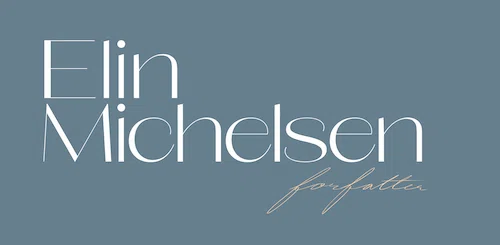
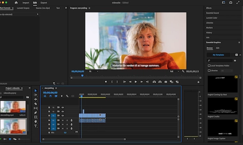
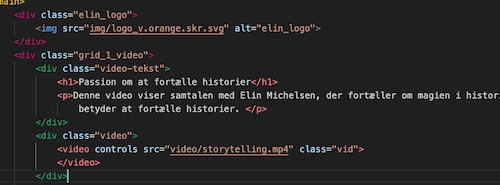

videosite

Da jeg skulle vælge en person med en passion, valgte jeg min mor. Hun er forfatter og har en passion for at fortælle historier.
Med det materiale vi fik udleveret, skulle vi samle sitet ved brug af layoutdiagram som vi implementerede i HTML, samtidig med at vi brugte css til design.

For at fuldføre opgaven brugte jeg:
HTML, CSS, Adobe Illustrator, Adobe Photoshop, Adobe Premier Pro.
Vidseosite.
Process

Jeg begyndte at udvikle det visuelle udtryk for sitet ved hjælp af farver, fonte og grafik. Mit mål var at fokusere på Elin som forfatter, og jeg skabte dette ved hjælp af Illustrator-værktøjet.
Jeg optog videoen med mit Canon-kamera og lyden med min iPhone. Derefter redigerede jeg både videoen og lyden i Premiere Pro.
Jeg lærte at indsætte videoer på forskellige måder i min kode, herunder brugen af en "iframe_wrapper" og .mp4-formatet.
